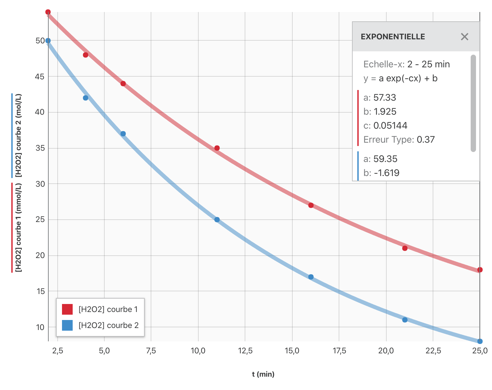

L’usage des calculatrices n’est pas autorisé. L’épreuve a été conçue pour être traitée sans calculatrice.
L’eau oxygénée ou solution aqueuse de peroxyde d’hydrogène $\ce{H2O2}$ est une espèce oxydante utilisée au laboratoire. Il s’agit aussi d’une espèce chimique utilisée dans la vie courante : décoloration des cheveux, désinfection des verres de contact, désinfection des plaies.
Sa décomposition, qui produit un dégagement de dioxygène, est accélérée par certains facteurs comme l’exposition à la lumière, l’ion fer (II), l’ion fer (III), le platine…
On se propose d’étudier la cinétique de la réaction de décomposition du peroxyde d’hydrogène réalisée en présence de l’ion fer (II).
L’équation (1) de cette réaction est : $$\ce{ 2 H2O2(aq) –> O2(g) + 2 H2O(liq) }$$
On réalise le protocole expérimental suivant :
-
On prépare huit béchers contenant chacun $V_0 = \pu{10,0 mL}$ d’une solution aqueuse de peroxyde d’hydrogène de concentration : $[\ce{H2O2}]_0 = \pu{5,8e-2 mol.L-1}$.
-
On les place dans une enceinte thermostatée qui maintient la température à la valeur $\theta_1 = \pu{20 °C}$.
-
À la date $t_0 = \pu{0 s}$, on ajoute dans chaque bécher quelques gouttes d’une solution contenant des ions fer (II). Il se produit alors la réaction (1).
-
À la date $t$, on prend un des huit béchers. On ajoute une grande quantité d’eau glacée dans celui-ci. On acidifie le contenu de ce bécher en ajourant quelques gouttes d’acide sulfurique concentré.
-
À l’aide d’une solution aqueuse de permanganate de potassium fraîchement préparée, de concentration $C_{\ce{KMnO4}} = \pu{1,0e-2 mol.L-1}$, on dose le peroxyde d’hydrogène restant dans le bécher. On note $V_E$ le volume versé de solution aqueuse de permanganate de potassium pour obtenir l’équivalence d’oxydoréduction.
Données
| Entité chimique | Couleur de l’entité en solution |
|---|---|
| ion fer (II) | vert |
| ion fer (III) | brun clair |
| ion manganèse | incolore |
| ion permanganate | violet |
À propos du protocole
- Quel est le rôle des ions fer (II) ?
- Quelle verrerie utilise-t-on pour prélever $\pu{10,0 mL}$ de solution de peroxyde d’hydrogène ? Justifier.
- Quel est le rôle de l’ajout d’eau glacée ?
- Faire un schéma légendé du montage utilisé pour doser la solution de peroxyde d’hydrogène par la solution de permanganate de potassium.
- Quel changement de teinte observe-t-on dans le bécher à l’équivalence ? Justifier.
Préparation préalable de la solution de permanganate de potassium
Un élève doit préparer $\pu{200,0 mL}$ de solution aqueuse de permanganate de potassium de concentration : $C_{\ce{KMnO4}} = \pu{1,0e-2 mol.L-1}$ à partir d’une solution (notée $S$) de permanganate de potassium de concentration $C = \pu{1,0e-1 mol.L-1}$.
Pour réaliser cette opération, il prélève $\pu{10,0 mL}$ de solution $S$ contenue dans un verre à pied, à l’aide d’une pipette jaugée.
Il verse le prélèvement dans un bécher et complète avec de l’eau distillée jusqu’à la graduation $\pu{200 mL}$.
- Cet élève a commis deux erreurs. Lesquelles ? Comment les corriger ?
Étude de la réaction de décomposition de l’eau oxygénée à la température $\theta_1 = \pu{20 °C}$
Sur le graphe ci-après, on a représenté la concentration en peroxyde d’hydrogène restant en fonction du temps (courbe 1).

-
Identifier les couples d’oxydoréduction mis en jeu et écrire les demi-équations d’oxydoréduction correspondantes.
-
Définir la vitesse volumique de réaction à une date $t$. Comment peut-on la déterminer graphiquement ?
-
Effectuer cette détermination aux instants de dates $t_1 = \pu{12 min}$ et $t_2 = \pu{20 min}$. Justifier la variation de vitesse observée.
-
Définir le temps de demi-réaction $t_{1/2}$. Déterminer graphiquement sa valeur.
Étude de la réaction de décomposition de l’eau oxygénée à la température $\theta_2 = \pu{40 °C}$
On recommence les mêmes expériences que précédemment mais l’enceinte thermostatée est maintenue à la température $\theta_2 = \pu{40 °C}$. On obtient la courbe 2 sur le graphe précédent.
-
Déterminer graphiquement le nouveau temps de demi-réaction $t_{1/2}\rq$.
-
Comparer les valeurs de $t_{1/2}$ et $t_{1/2}\rq$. Interpréter.
Expression de la concentration en $[\ce{H2O2}]$ restant en fonction du temps
Pour tracer les courbes 1 et 2, on a dû calculer la concentration $[\ce{H2O2}]$ en peroxyde d’hydrogène restant à chaque instant de date $t$. La réaction de dosage de l’eau oxygénée par le permanganate de potassium met en jeu les couples d’oxydoréduction $\ce{MnO4^-(aq)/Mn^{2+}(aq)}$ et $\ce{O2(g) / H2O2(aq)}$.
-
Écrire les demi-équations d’oxydoréduction correspondantes puis établir l’équation de la réaction de dosage.
-
En déduire l’expression de la concentration $[\ce{H2O2}]$ en peroxyde d’hydrogène restant à une date $t$ en fonction de $C_{\ce{KMnO4}}$, $V_E$ et $V_0$.